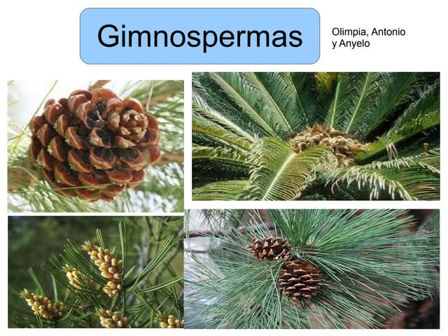
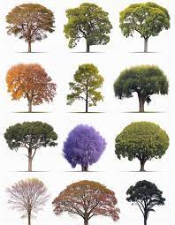
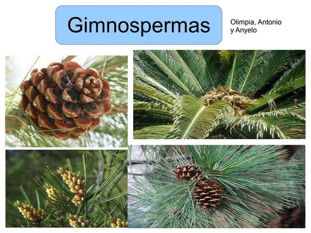
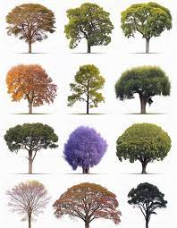

Introducción
Bienvenidos a nuestro espacio dedicado al fascinante mundo de los cultivos y las plantas. Aquí encontrarás información valiosa y práctica sobre los diversos tipos de plantas, desde las ornamentales que embellecen nuestros entornos, hasta los cultivos esenciales que sustentan nuestra vida diaria.
La relación entre la humanidad y las plantas es tan antigua como nuestra historia misma. A lo largo de los siglos, hemos aprendido a cultivar la tierra, a seleccionar las variedades más resistentes y a aprovechar los beneficios de las plantas en la alimentación, la medicina, la industria y el bienestar general.
En esta página, exploraremos las principales categorías de cultivos, desde hortalizas y frutales hasta plantas medicinales y decorativas. También te brindaremos consejos prácticos para su cuidado, información sobre las condiciones ideales de crecimiento y datos curiosos que te ayudarán a conectar con la naturaleza de una manera más profunda.
Ya sea que seas un agricultor experimentado, un aficionado a la jardinería o alguien interesado en aprender sobre la riqueza de nuestra flora, esta página está diseñada para inspirarte y guiarte en tu viaje por el universo vegetal. ¡Descubre con nosotros el increíble potencial de los cultivos y las plantas!
 


